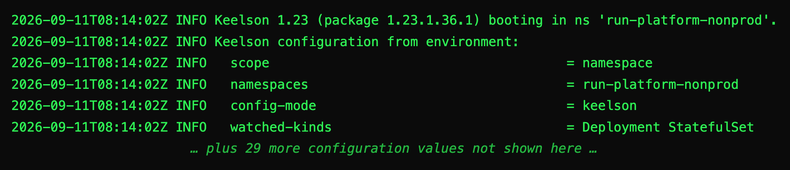
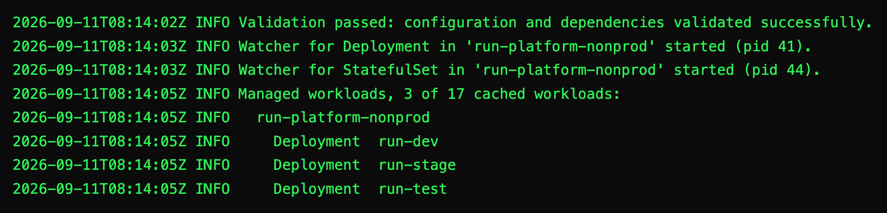
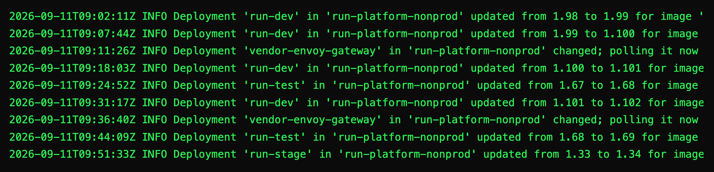
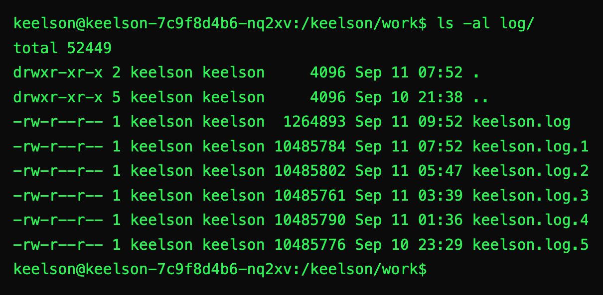
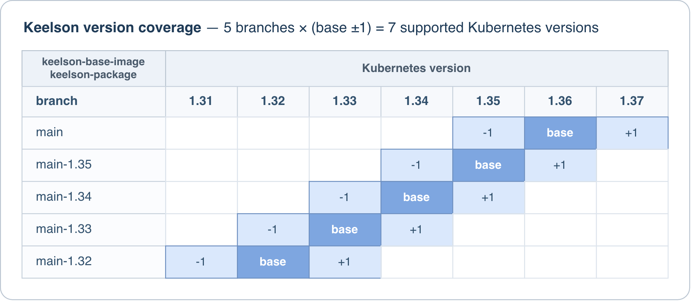
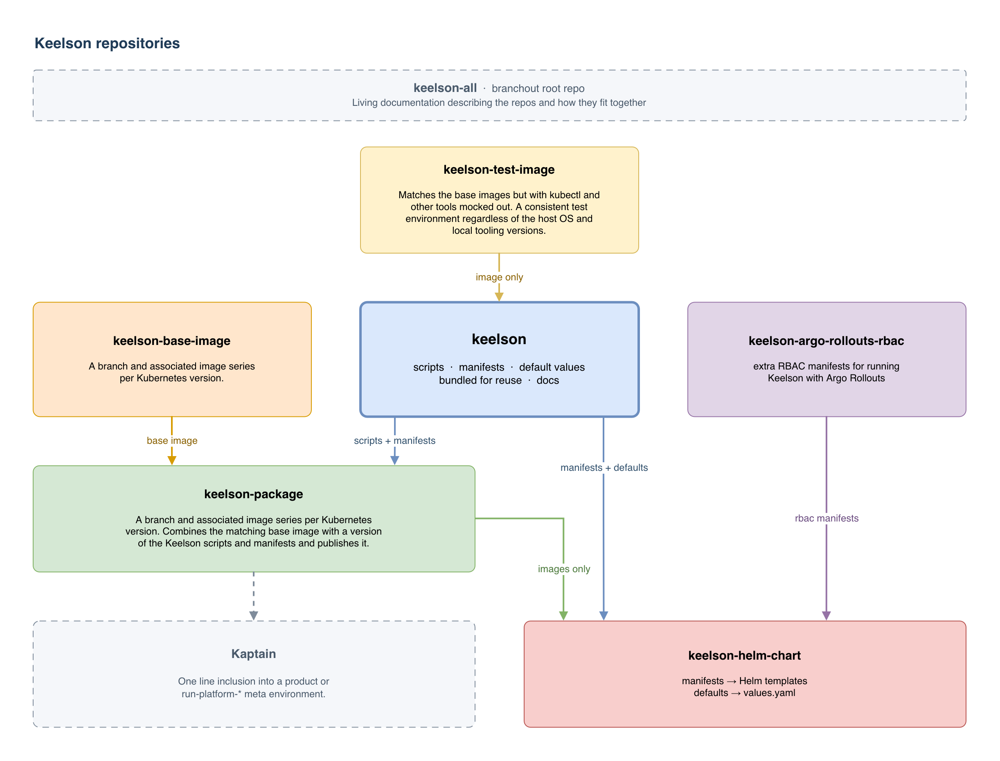

Keelson
Keep your workloads up-to-date.
01 Our Mission
Keelson's mission: great operator UX.
At its heart, an image updater is a simple piece of software, so it follows that it should be simple to configure and simple to understand what it has and has not done. Keelson aims to live up to those expectations. Learn how below.
- Logging Lean, useful info on the console, with complete detailed debug on disk inside the pod and auto rotated. No need to reconfigure and reboot just to find out what is going on.
- Configuration Sensible defaults and total configurability across the board.
- Versions Supports versions with any number of parts or segments, not limited to the usual three.
- Updates Respectful, careful, minimal image updates, or other strategies if you want them.
- Security Least privilege support designed in, with a practical default setup for getting started.
-
Drop-in
Optionally reads your existing
keel.shannotations, so most workloads move across untouched.
02 How it works
Watch. Poll. Compare. Update.
-
Watch
Subscribes to events for every workload Keelson controls, across the whole cluster or only the namespaces you list.
-
Poll
Queries the image repository for tags on a schedule you set, with the registry credentials the workload uses.
-
Compare
Ranks tags and decides whether a newer one qualifies under the policy in the annotation.
-
Update
Writes the new tag. Your workload deploys the way it always does, rolling or otherwise, with configuration untouched.
03 Strengths
Keelson's Strengths
Logging
Key info on console. Full debug inside.
Keelson only logs useful information to the console. When it launches it tells you the version of Keelson, the version of the image, and all the configuration values. Then the processes it starts. Then the number of watched workloads and which ones are under Keelson's control. If you need more, full debug logs wait inside the pod for inspection.




Configuration
Auto by convention. Override as needed.
Registries configuration exists to allow Keelson to query registries for workloads that pull images without imagePullSecrets, such as with various cloud permissions models. Its secondary purpose is to allow more efficient registry connections for multiple workloads with the same registry and credentials pair, by caching the credentials and using them through a whole cycle for all images with the same registry.
Each entry is keyed by a registry host and each has an auth mode. For
secret auth mode the associated secret name and .auth key
is the same as the registries key where possible, and mapped to a
similar value where not. Overrides are available for both the secret
name and the .auth key, usable alone or both together for
explicit configuration.
# mounted from the keelson ConfigMap at /configmap/registries.yaml
registries:
# Cloud identity, nothing to store and nothing to rotate
123.dkr.ecr.us-east-1.amazonaws.com:
auth-mode: aws
europe-docker.pkg.dev:
auth-mode: gcp
myregistry.azurecr.io:
auth-mode: azure
# Auto secret name and key, by convention
ghcr.io:
# Reads from the same namespace Keelson is in
auth-mode: secret # secret `ghcr.io` .auth key `ghcr.io`
reg.example:5000:
auth-mode: secret # secret `reg.example-5000` .auth key `reg.example:5000`
namespace: run-stage
# Mixed configuration
reg.example:5001:
auth-mode: secret # .auth key `reg.example:5001`
secret-name-override: shared-pull-creds
reg.example:5002:
auth-mode: secret # secret `reg.example-5002`
secret-key-override: https://reg.example:5002/v1/
# Explicit
reg.example:5003:
auth-mode: secret
namespace: run-test
secret-name-override: reg-example-5003-creds
secret-key-override: https://reg.example:5003/v1/
A registry with no entry relies on the workload resource, and if there
is no imagePullSecrets present it's treated as anonymous.
By default if the central credential fails to connect and the workload
has its own credential then that is tried as a fallback. If the
workload credential fails and the
KEELSON_RESPECT_SA_PULL_SECRETS service account check is
enabled and the service account has a credential then that's tried
too.
A workload can opt out of central credential use by setting
keelson.pro/credentials to respect-pod-spec
if it's known to require a different one to the central configuration.
Available values for keelson.pro/credentials are:
central-then-pod-speccentral first, then the
workload's own imagePullSecretscentralcentral only, no fallback. Synonym
ignore-podrespect-pod-specthe workload's own only,
central never consultedVersions
Beyond semver, flexible versions.
Many tools only support 3-part semver style versions, to the exclusion of any other format. Keelson doesn't try to force you to use semver - you can use whatever length you want. Some projects don't need 3 parts; 2 or even 1 might be enough, others need more. For example, it's perfectly reasonable to combine a 3 part base image version with a 3 part package, app or script-set version, and add a patch of your own on the end, resulting in 7 parts.
majorthe first part, alwaysminorthe second part, alwayspatchthe last part, whatever the lengthpart-<n>any part by number, 1-indexed, unbounded
Everything to the left of the chosen part must match exactly. On a
five part tag like 1.15.1.36.1, major,
minor and patch give you the first, second
and fifth, which leaves the third and fourth with no other name: that
is what part-3 and part-4 are for. A tag
with too few parts for the policy is skipped and logged.
Updates
Careful, respectful, minimal updates.
Great deployment systems run a validation pass against the API before applying their manifests. If some other system has written a different value to a field with a different ownership on the field, it causes that validation to fail. By default Keelson matches the existing ownership when it modifies the image field leaving it exactly how it was found. However it's also reasonable to want Keelson to say it changed the field itself, so that's an option too. Regardless, every write is scoped to the image field alone, so nothing else on the workload is at risk regardless of what else manages it.
mimicapplies as the field's existing owner, the defaultpatcha strategic-merge patch, attributed to Keelsonclaimapplies as Keelson, taking ownership of the fieldSecurity
Works out of the box, but easy to cut down.
The included RBAC covers the whole feature set so it works with any configuration. Many installations need a lot less, so the manifests are structured so it's easy to remove what you don't need. Reducing it is documented and mostly automatic when using Helm and explicit when using Kaptain.
- Cluster scope drop the global Namespace permission and the redundant own-namespace role pair
- Namespace scope drop the all-namespaces ClusterRole and binding, and supply the roles per namespace
- No pull secrets using one cloud workload identity mode alone, drop the Secret permissions entirely
- No service account secrets with
KEELSON_RESPECT_SA_PULL_SECRETSfalse, drop the ServiceAccount permission - Fewer kinds reduce the remaining roles to just the kinds you actually watch
- No suspended CronJobs drop the Job creation permission
Drop-in
An *almost* drop-in replacement for Keel.
Set KEELSON_CONFIG_MODE=keel and Keelson reads your
existing keel.sh/ annotations, so most workloads move
across untouched.
Carries over
keel.sh/annotations, camelCase or hyphenated- Deployment, StatefulSet, DaemonSet, CronJob
pollScheduleas@hourly,@daily,@weekly,@monthly,@yearly, or@everywith a duration:30s,5m,1h30m,1.5hpolicy,matchTagandmatchModeinitContainers,monitorContainersandimageVolumes, with Keel's defaults
Not supported
policy: force, rejected outright- Digest tracking behind a mutable tag, such as
:latest approvals,approvalDeadline, andreleaseNotes- Raw cron expressions in
pollSchedule - Workload configuration in labels. Keelson only reads annotations
In addition to the 4 Kinds that Keel supports, Keelson also supports Argo Rollouts and Jobs. Jobs are handled by annotating a suspended CronJob, which Keelson triggers on update.
Migration Path
There are two options for migrating from Keel to Keelson:
- Take down Keel and stand up Keelson in
keelorbothmode. Verify that you're not using any unsupported features before doing this. - Stand up Keelson side by side next to Keel in
keelsonmode and migrate workloads over one at a time.
Note that a workload can only have one annotation prefix or the other, never both.
04 Install
Install it your way.
There are many ways to deploy a workload to Kubernetes. Keelson directly supports the most popular method (Helm) and the best method (Kaptain), and is adaptable to any other way with a little work.
-
Kaptain keelson › Kaptain
A one-line entry in your product or meta environment, plus any config overrides.
spec: contents: - ghcr.io/keelson-pro/keelson/keelson-package:1.42.1.42.1 -
Helm keelson › Helm
The chart, as an OCI artefact or from the classic repo, with values for scope, registries and RBAC.
$ helm install keelson oci://ghcr.io/keelson-pro/helm-charts/keelson \ --namespace cluster-infra --create-namespace \ --set image.tag=1.42.1.42.1 -
Custom keelson › Raw Apply
The plain manifests, for anyone who would rather read and apply them than template them.
$ helm repo add keelson https://keelson-pro.github.io/keelson-helm-chart $ helm repo update $ helm template keelson keelson/keelson --namespace cluster-infra --set image.tag=1.20.1.36.1 --output-dir rendered $ kubectl apply --server-side --field-manager="yourFieldManager" -R -f rendered -
Version coverage keelson › Kubernetes Version Support
Keelson itself will work with any version of Kubernetes 1.22 and up, however the tooling in the images has a narrower range. Each keelson-package image supports the Kubernetes version in its 3rd and 4th parts, plus one version either side of it.
The only other constraint is that earlier manifests with a later image can fail at startup on validation. So keep the manifest set and the 1st and 2nd parts of the image version in sync. This is automatic with both Kaptain and Helm.

05 Docs
Living documentation in the repositories
Each focused document lives with the system it describes so it's more likely to be kept up-to-date.
-
Start here keelson
The heart of the Keelson project and index of all documentation.
-
Getting it running keelson › Using Keelson
Least privilege, Kaptain, Helm and raw apply, with examples.
-
Full configuration reference
Configuration.md › Everything you can set or tune
Annotations, global configuration and behavioural settings, plus the description of the logging system.
-
Helm chart docs keelson-helm-chart › Install using Helm
OCI artefact, classic repo or a clone, plus values and registries.
-
Field ownership FieldManagerOwnership.md › Keelson's approach
A discussion of how Kubernetes field manager ownership works, and the different approaches to it.
-
Entry points EntryPoints.md
Each script called from the outside, and what they all do.
-
The wider ecosystem keelson-all › Branchout repo management
How the repositories fit together, and how to work across them.
06 GitHub
GitHub Org And Repos
Single responsibility repos, organised with Branchout. The Keelson controller repo is the heart and soul of the system. The rest exist so it can be built, packaged and installed cleanly, in several ways, with support for different Kubernetes versions and total consistency otherwise.
-
keelson the controller
Bash scripts and manifests, bundled as a set of versioned immutable release artefacts for keelson-package and the Helm chart.
-
keelson-package runnable images
Keelson laid into the base images, bundled with the install manifests, the contract, and default values for a cluster install.
-
keelson-helm-chart the chart
Those manifests translated into Helm templates, published as an OCI artefact, a classic repo on Pages, and a release asset.
-
keelson-base-image the foundation
Lean Debian Trixie slim with kubectl, yq 4 and skopeo, and nothing else. Minimal, easy to update dependencies for easy CVE mitigation.
-
keelson-foreign-ns-rbac add-on
Role and RoleBinding granting the Keelson ServiceAccount access in a namespace Keelson is not deployed in.
-
keelson-argo-rollouts-rbac add-on
Optional access to
rollouts.argoproj.io, cluster wide or for only the namespaces you need. -
keelson-test-image the test rig
An image with an identical subset of the tooling in the base images, but with all network tooling mocked at the BATS layer.
-
keelson-all the workspace
The Branchout root repo that clones and manages the rest, and where the cross-cutting docs live.
-
keelson-pro this site
The source for this website. All rights reserved, but public so you can see exactly what it does.
